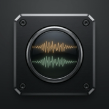

PARALLEL // DUAL A2DP AUDIO MATRIX

PARALLEL // 平行聲波
平行雙軌・並肩聆聽 // 雙耳機延遲同步混音台
繁中
EN
日本語
STANDBY // NO AUDIO LINK
RESERVOIR: STANDBY
[1] 讀取耳機裝置
[2] 綁定分頁音訊
[SYNC] 重置緩衝
[STOP] 停止串流
JUKEBOX // 側邊點歌窗（綁定分頁後換歌免重新共享）
YT Music
YouTube
Spotify
載入本地音訊
DECK A
// CH-01
SOLO
MUTE
OUTPUT SINK // 耳機 A
-- 請先點擊 [1] 讀取耳機 --
GAIN // 音量 A
100%
-∞
50%
100% (0dB)
150%
SYNC DELAY // 延遲 A
0 ms
-5ms
0ms
+5ms
MASTER MONITOR
CH1
CH2
MASTER // 總音量
100%
MIN
UNITY (100%)
MAX
CROSSFADER // A/B 平衡
CENTER
< DECK A
[RESET 0]
DECK B >
DECK B
// CH-02
SOLO
MUTE
OUTPUT SINK // 耳機 B
-- 請先點擊 [1] 讀取耳機 --
GAIN // 音量 B
100%
-∞
50%
100% (0dB)
150%
SYNC DELAY // 延遲 B
0 ms
-5ms
0ms
+5ms
WEB AUDIO DSP // INTERACTIVE LOW-LATENCY CLOCK // 0-300MS SYNC DELAY